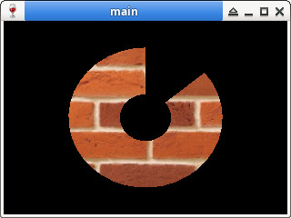

Steward
分享是一種喜悅、更是一種幸福
程式語言 - MASM32 - OpenGL 1.0 - Draw Pie
參考資訊：
http://www.winprog.org/tutorial/
http://winapi.freetechsecrets.com/win32/
https://github.com/gamedev-net/nehe-opengl
https://github.com/gammasoft71/Examples_Win32
main.asm
.386
.model flat,stdcall
option casemap:none
include c:\masm32\include\windows.inc
include c:\masm32\include\ogl\kernel32.inc
include c:\masm32\include\ogl\user32.inc
include c:\masm32\include\ogl\gdi32.inc
include c:\masm32\include\ogl\gl.def
include c:\masm32\include\ogl\glu.def
include c:\masm32\include\ogl\winextra\winextra.def
includelib c:\masm32\lib\gdi32.lib
includelib c:\masm32\lib\glu32.lib
includelib c:\masm32\lib\user32.lib
includelib c:\masm32\lib\opengl32.lib
includelib c:\masm32\lib\kernel32.lib
.data
hWin DWORD 0
hInstance DWORD 0
pCmdLine DWORD 0
defWndProc DWORD 0
hDC HDC 0
hRC HGLRC 0
tex GLuint 0
hGLU HMODULE 0
pgluNewQuadric DWORD 0
pgluDeleteQuadric DWORD 0
pgluQuadricDrawStyle DWORD 0
pgluQuadricNormals DWORD 0
pgluQuadricTexture DWORD 0
pgluSphere DWORD 0
pgluCylinder DWORD 0
pgluDisk DWORD 0
pgluPartialDisk DWORD 0
.const
szCaption BYTE "main",0
nearPlane REAL8 0.1
farPlane REAL8 100.0
angle REAL8 45.0
szBMPName BYTE "main.bmp",0
szGLU BYTE "glu32.dll",0
szNewQuadric BYTE "gluNewQuadric",0
szDeleteQuadric BYTE "gluDeleteQuadric",0
szQuadricDrawStyle BYTE "gluQuadricDrawStyle",0
szQuadricNormals BYTE "gluQuadricNormals",0
szQuadricTexture BYTE "gluQuadricTexture",0
szSphere BYTE "gluSphere",0
szCylinder BYTE "gluCylinder",0
szDisk BYTE "gluDisk",0
szPartialDisk BYTE "gluPartialDisk",0
.code
WndProc proc hWnd:HWND, uMsg:UINT, wParam:WPARAM, lParam:LPARAM
.if uMsg == WM_CLOSE
invoke DestroyWindow, hWnd
xor eax, eax
ret
.elseif uMsg == WM_DESTROY
invoke PostQuitMessage, 0
xor eax, eax
ret
.endif
invoke CallWindowProc, defWndProc, hWnd, uMsg, wParam, lParam
ret
WndProc endp
WinMain proc hInst:DWORD, hPrevInst:DWORD, CmdLine:DWORD, CmdShow:DWORD
local w:DWORD
local h:DWORD
local msg:MSG
local fmt:DWORD
local pfd:PIXELFORMATDESCRIPTOR
local top:REAL8
local right:REAL8
local mtop:REAL8
local mright:REAL8
local bm:BITMAP
local bmi:BITMAPINFO
local bmp:HBITMAP
local len:DWORD
local pixels:DWORD
local quadric:DWORD
local rc:RECT
mov w, 320
mov h, 240
invoke CreateWindowEx, WS_EX_LEFT, WC_DIALOG, offset szCaption, WS_OVERLAPPEDWINDOW or WS_VISIBLE, 0, 0, w, h, NULL, NULL, NULL, NULL
mov hWin, eax
invoke SetWindowLong, hWin, GWL_WNDPROC, WndProc
mov defWndProc, eax
invoke RtlZeroMemory, addr pfd, sizeof PIXELFORMATDESCRIPTOR
mov pfd.nSize, sizeof PIXELFORMATDESCRIPTOR
mov pfd.nVersion, 1
mov pfd.dwFlags, PFD_DRAW_TO_WINDOW or PFD_SUPPORT_OPENGL or PFD_DOUBLEBUFFER
mov pfd.iPixelType, PFD_TYPE_RGBA
mov pfd.cColorBits, 16
mov pfd.cDepthBits, 16
mov pfd.dwLayerMask, PFD_MAIN_PLANE
invoke GetDC, hWin
mov hDC, eax
invoke ChoosePixelFormat, hDC, addr pfd
mov fmt, eax
invoke SetPixelFormat, hDC, fmt, addr pfd
invoke wglCreateContext, hDC
mov hRC, eax
invoke wglMakeCurrent, hDC, hRC
invoke LoadLibrary, ADDR szGLU
mov hGLU, eax
invoke GetProcAddress, hGLU, ADDR szNewQuadric
mov pgluNewQuadric, eax
invoke GetProcAddress, hGLU, ADDR szDeleteQuadric
mov pgluDeleteQuadric, eax
invoke GetProcAddress, hGLU, ADDR szQuadricDrawStyle
mov pgluQuadricDrawStyle, eax
invoke GetProcAddress, hGLU, ADDR szQuadricNormals
mov pgluQuadricNormals, eax
invoke GetProcAddress, hGLU, ADDR szQuadricTexture
mov pgluQuadricTexture, eax
invoke GetProcAddress, hGLU, ADDR szSphere
mov pgluSphere, eax
invoke GetProcAddress, hGLU, ADDR szCylinder
mov pgluCylinder, eax
invoke GetProcAddress, hGLU, ADDR szDisk
mov pgluDisk, eax
invoke GetProcAddress, hGLU, ADDR szPartialDisk
mov pgluPartialDisk, eax
invoke LoadImageA, NULL, offset szBMPName, IMAGE_BITMAP, 0, 0, LR_LOADFROMFILE
mov bmp, eax
invoke GetObject, bmp, sizeof BITMAP, addr bm
mov bmi.bmiHeader.biSize, sizeof BITMAPINFOHEADER
push bm.bmWidth
pop bmi.bmiHeader.biWidth
mov eax, -1
mul bm.bmHeight
mov bmi.bmiHeader.biHeight, eax
mov bmi.bmiHeader.biPlanes, 1
mov bmi.bmiHeader.biBitCount, 24
mov bmi.bmiHeader.biCompression, BI_RGB
mov eax, 3
mul bm.bmWidth
mul bm.bmHeight
mov len, eax
invoke GetProcessHeap
invoke HeapAlloc, eax, 0, len
mov pixels, eax
invoke GetDIBits, hDC, bmp, 0, bm.bmHeight, pixels, addr bmi, DIB_RGB_COLORS
invoke glGenTextures, 1, offset tex
invoke glBindTexture, GL_TEXTURE_2D, tex
invoke glEnable, GL_TEXTURE_2D
invoke glTexImage2D, GL_TEXTURE_2D, 0, GL_RGB, bm.bmWidth, bm.bmHeight, 0, GL_BGR, GL_UNSIGNED_BYTE, pixels
invoke glTexParameteri, GL_TEXTURE_2D, GL_TEXTURE_MIN_FILTER, GL_LINEAR
invoke glTexParameteri, GL_TEXTURE_2D, GL_TEXTURE_MAG_FILTER, GL_LINEAR
invoke GetProcessHeap
invoke HeapFree, eax, 0, pixels
invoke DeleteObject, bmp
fld angle
fldpi
fmulp st(1), st(0)
mov eax, 360
push eax
fild DWORD ptr [esp]
add esp, 4
fdivp st(1), st(0)
fptan
fstp st(0)
fmul nearPlane
fstp top
fld top
push w
fild DWORD ptr [esp]
add esp, 4
push h
fild DWORD ptr [esp]
add esp, 4
fdivp st(1), st(0)
fmulp st(1), st(0)
fstp right
fld top
fchs
fstp mtop
fld right
fchs
fstp mright
invoke RtlZeroMemory, addr rc, sizeof RECT
invoke GetClientRect, hWin, addr rc
mov eax, rc.right
sub eax, rc.left
mov ecx, rc.bottom
sub ecx, rc.top
invoke glViewport, 0, 0, eax, ecx
invoke glMatrixMode, GL_PROJECTION
invoke glFrustum, \
DWORD ptr [mright + 0], \
DWORD ptr [mright + 4], \
DWORD ptr [right + 0], \
DWORD ptr [right + 4], \
DWORD ptr [mtop + 0], \
DWORD ptr [mtop + 4], \
DWORD ptr [top + 0], \
DWORD ptr [top + 4], \
DWORD ptr [nearPlane + 0], \
DWORD ptr [nearPlane + 4], \
DWORD ptr [farPlane + 0], \
DWORD ptr [farPlane + 4]
invoke glMatrixMode, GL_MODELVIEW
invoke glLoadIdentity
@@:
invoke GetMessage, addr msg, NULL, 0, 0
cmp eax, 0
je @f
invoke DispatchMessage, addr msg
call pgluNewQuadric
mov quadric, eax
push GLU_SMOOTH
push quadric
call DWORD PTR [pgluQuadricNormals]
push GL_TRUE
push quadric
call DWORD PTR [pgluQuadricTexture]
invoke glLoadIdentity
invoke glTranslatef, f4(0.0), f4(0.0), f4(-5.0)
invoke glRotatef, f4(0.0), f4(0.0), f4(1.0), f4(0.0)
invoke glBindTexture, GL_TEXTURE_2D, tex
push DWORD PTR [f8(310.0) + 4]
push DWORD PTR [f8(310.0) + 0]
push DWORD PTR [f8(50.0) + 4]
push DWORD PTR [f8(50.0) + 0]
push 32
push 32
push DWORD PTR [f8(1.5) + 4]
push DWORD PTR [f8(1.5) + 0]
push DWORD PTR [f8(0.5) + 4]
push DWORD PTR [f8(0.5) + 0]
push quadric
call DWORD PTR [pgluPartialDisk]
push quadric
call DWORD PTR [pgluDeleteQuadric]
invoke SwapBuffers, hDC
jmp @b
@@:
invoke wglMakeCurrent, NULL, NULL
invoke wglDeleteContext, hRC
invoke ReleaseDC, hWin, hDC
invoke glDeleteTextures, 1, offset tex
mov eax, msg.wParam
ret
WinMain endp
start:
invoke GetModuleHandle, NULL
mov hInstance, eax
invoke GetCommandLine
mov pCmdLine, eax
invoke WinMain, hInstance, NULL, pCmdLine, SW_SHOWDEFAULT
xor eax, eax
ret
end start
完成

